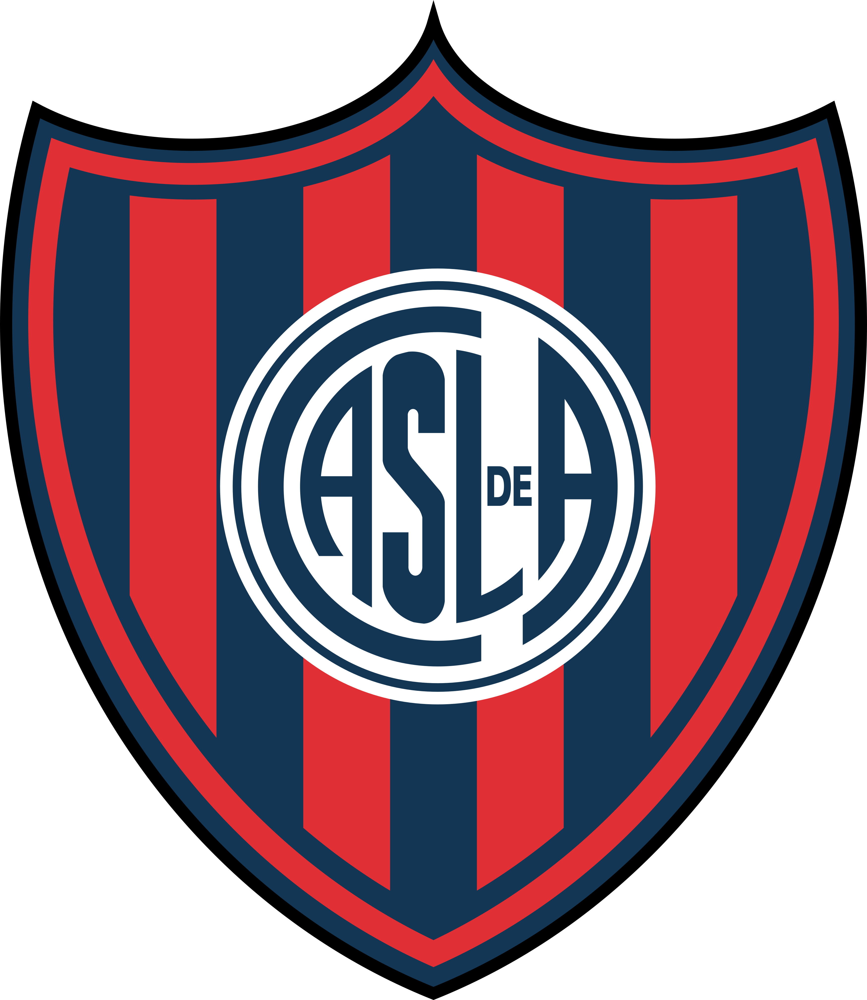
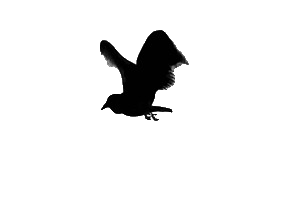
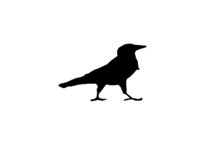
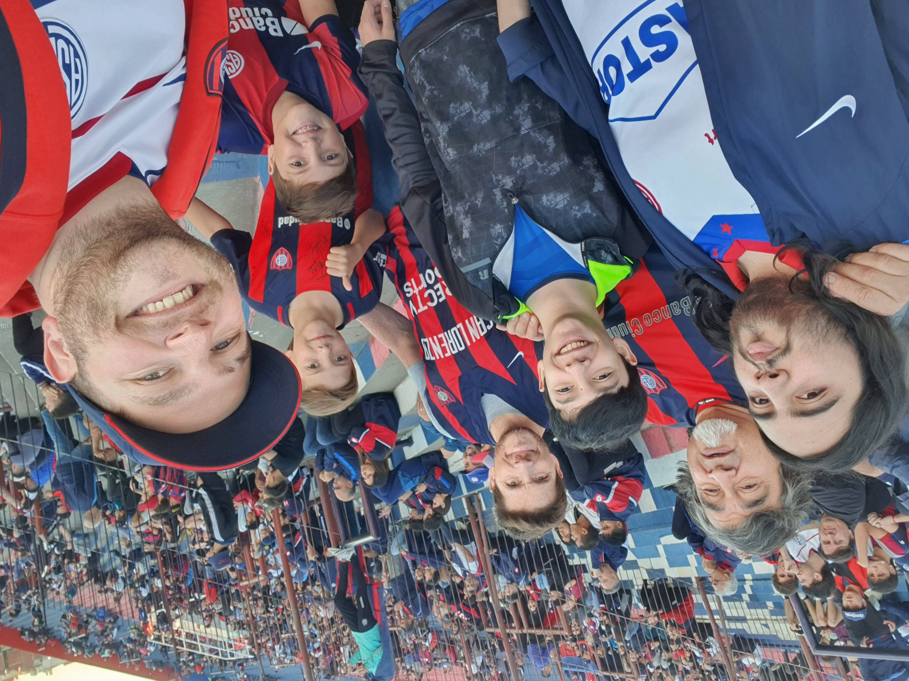

LOS CUERVOS DE BOEDO



Sitio Web Oficial de la mejor hinchada del planeta
"Este es un espacio dedicado al Glorioso Club Atlético San Lorenzo de Almagro"
Conocidos de tribuna, hermanados por San Lorenzo, Los Cuervos De Boedo nació mucho antes de siquiera saber que se estaba gestando como Agrupación. Las ideas fueron la antesala de la estructura y previo a la amistad. Así es como se empezó a forjar una familia de sanlorencistas que viajaba a todos lados con el Ciclón y que con el correr de los años fue sumando compañeros de tablón, asados, noches y giras, que se transformaron en compañeros de militancia y lucha, respeto, lealtad y amor por San Lorenzo.
